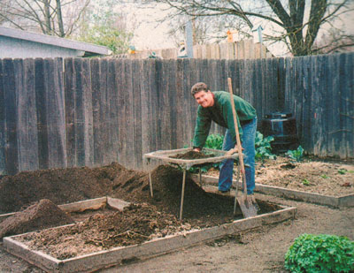

COUNTRY LORE
Necessity being the mother of invention, I recently found myself searching for the easiest way to screen my garden soil when I spotted an old card table. I covered the top frame with 3/8" wire screen, and voila!-the perfect screening device. I loaned it to my father and it was three weeks before he cleaned up his entire yard!
Bill Rossknecht
Grants Pass, Oregon
Bridge, anyone? Bill Rossknecht gives an old card table new life as a soil screen
|
|
 |
|